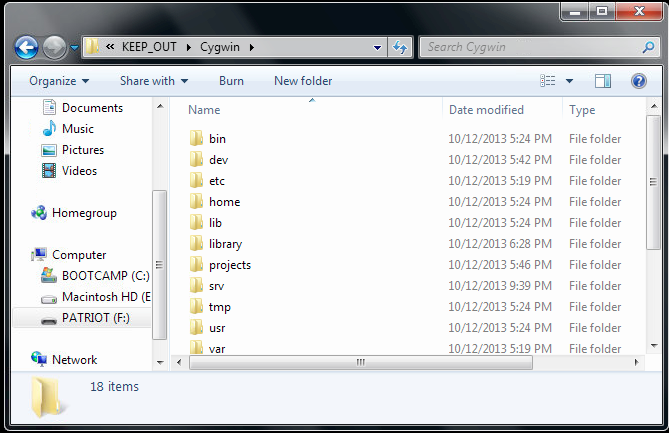
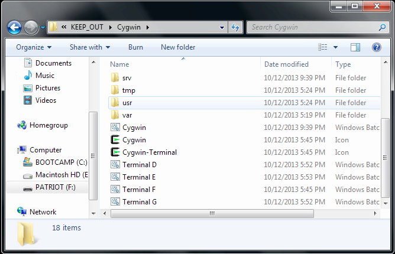
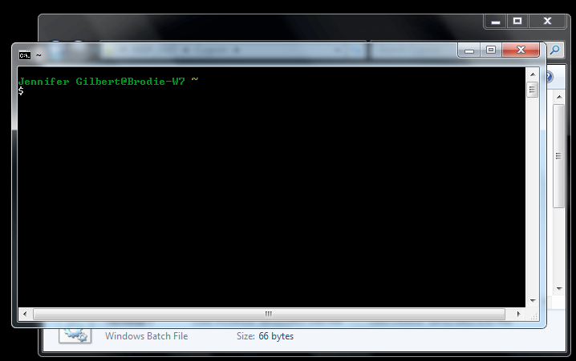

Using Terminal
About Terminal

JANE SAY:
Terminal like dark forest with no flametorch.
... Don't worry, wild boar probably can't smell you.
Terminal is also known as the Bash shell, plain old Bash (technically, Bash is the language you're using to communicate with Terminal), or the command line.
There are subtle differences between these terms, but the only thing you really need to understand for now is that when you need to Google how to do something on the command line, any of these terms may pop up in the answers you see.
Terminal is a way of communicating more directly with your computer. You're used to using software that uses graphics, colors, menus, and other fancy things. Terminal's interface is much simpler, but the program itself is extremely powerful.
Case in point: Simply typing rm -rf / into Terminal can wipe out your computer. The rm -rf command is so potentially dangerous even among tech professionals that it was once responsible for wiping out 90% of Toy Story 2. True story!
So, hey, don't do that, and be wary of any Terminal command you see in a forum where someone might be messing with you. Places like Stack Overflow are well moderated (if a bit cranky at times) and shouldn't cause that problem.
Don't worry, most Terminal commands are safe. Just be very careful with sudo, rm, and rm -rf. If you aren't sure a Terminal command is a good idea, ask for help.
What can you do with Terminal?
Here are a few things you might eventually want to do with Terminal:
- Search for, and rename, every file on your system that matches a certain filename
- Create files or folders in batches
- Run Ruby programs
- Search for information in a database
- Communicate with a server or other remote machine
There's no getting around it: If you become a professional programmer, you'll be working in Terminal. Using Terminal can be frustrating at first, but eventually you'll appreciate its speed, power, and simplicity.
Opening Terminal
Click the Terminal shortcut on your environment desktop.
You should see something like this:
Scroll down to a set of files that all start with Terminal and then have a letter:
Run the file that matches your USB drive letter, which varies from machine to machine. Note that in the screenshot above, the drive letter is F: (my USB disk is called PATRIOT, and it's listed as F: on the lefthand side), so I would run Terminal F.
When you open the file, a black box will appear, and some odd stuff might happen for a moment, or the box may just sit there for a moment. But eventually, you should get a dollar-sign prompt that looks something like this:
That's it. That's all Terminal does. Bit of a letdown, no?
Note that your prompt will look a bit different -- I'm Jennifer Gilbert and I'm using a computer named Brodie, which is why that information appears in the screenshot.
Anyway, you're now ready to use Terminal. Congratulations!
Terminal in Three Exercises
JANE SAY:
Catch brainsweat neatly in stone bowl.
No leave on ground. Wild boars can smell fear.
Try the commands in each lesson in order. Anywhere you see "???" instead of a command, it's your job to guess the right one.
Lesson 1: Folder Basics
| COMMAND | EXPLANATION |
| pwd | pwd prints your working directory, so you know where you are. Terminal will probably tell you that you're in a user folder -- something like /home/Jennifer Gilbert. You don't want that, because your username may vary at another computer, which means you'll have trouble accessing anything you put in this directory if you switch computers later. Let's get out of here! |
| cd /projects | cd means "change directory", and we've switched to /projects. You'll spend lots of time in this folder -- it's the one linked from your environment desktop (listed there as Your Projects). |
| ls | ls stands for "list", and it helps you see the files and folders in a directory. You should see several rather obviously named folders. |
| cd ruby_projects | There's cd again, for "change directory." |
| ??? | How can you take a look around in this folder? It's one of the commands you've already used. |
| ruby sample_ruby_program.rb | When you listed the contents of the ruby_projects directory, you found a program in there. You can use ruby and then the program name to run it ("Ruby, please run the program that has this filename"). The output we get from the program is pretty much nonsense, so, no, you're not having a stroke. |
| cd .. | This is how you move up one directory. |
| ruby ruby_projects/sample_ruby_program.rb | Hey, look at that -- you can still run the Ruby program, but you had to type a little more information in order to point Terminal to the file. File locations are relative in Terminal. |
| ??? | Can you figure out how to change to the web_projects directory? |
| ??? | List the files and folders in the web_projects directory. |
| cd sample_project | Helpful tip: You could have just typed "cd sam" and then hit the Tab key. Tab will autocomplete a path as long as you've typed enough to make it unique. |
Lesson 2: A Pretend Web Project
You can use Terminal to create, edit, and delete files, though you can also accomplish the same thing in the graphical user interface (GUI) that you're used to dealing with (you know, the one with the cute little icons).
Believe it or not, if you stick with Terminal, you'll eventually find it faster and more convenient. While Terminal won't replace your GUI on your own machine (especially when it comes to editing code), it's often all you have to interact with when communicating with a remote machine, so it's important to practice using it when you can.
| COMMAND | EXPLANATION |
| cd /projects | There's that familiar command -- it'll take you to your projects folder from any directory in Terminal. Just like clicking your heels together three times! |
| ??? | List the contents of your current directory. |
| ??? | Change your working directory to the sample_project folder. |
| ??? | Take a look around the sample_project folder. These files look familiar -- it's just a basic web project. |
| less index.html | It's a pain to have to open files all the time -- less lets you just take a quick peek. When you're done looking around in index.html, q will exit you out of less. |
| ??? | Hm, I've forgotten where we are. Can you print your working directory in order to check? |
| ??? | We don't want to be in the sample_project directory anymore. Can you move one level up? |
| mkdir new_project | Terminal lets you create directories. We've just made a folder called new_project. |
| ??? | Change your working directory so you're inside of new_project. For bonus points, use Tab to autocomplete your destination. |
| touch index.html | touch is like mkdir, but for individual files. You just made a blank file called index.html. |
| echo 'hello there!' | Well, that was silly -- we just got Terminal to say something, like you would with print or puts. Note that single quotes are often safer than double quotes because they're more literal in Terminal -- if you used double quotes to run this command, you probably got a weird error. Double quotes are more flexible -- they allow you to use variables and such within them. Single quotes mean "Just echo exactly what I said. Don't get fancy." But anyway, what's the point of getting Terminal to print something? |
| echo 'This is a brand new page!' >> index.html | Now you're fancy. You just printed something directly into your index.html file. |
| ??? | Take a quick peek at the contents of index.html to confirm that you did in fact print words into it. |
| python -m SimpleHTTPServer 9999 | You may get a firewall warning from Windows on this one, but it's perfectly safe -- click "Allow Access." Abandon Terminal for a moment and pop open Chrome. Point your browser to localhost:9999. Look familiar? Hit refresh a few times, and watch what happens in Terminal. You're running a small local web server (local meaning that it's not available outside of your own computer), and what you're seeing each time you hit refresh is the GET request coming from your browser, and your server fulfilling that request (hopefully successfully, in which case you will see the code 200, which means OK). Try going to localhost:9999/another_page.html. What happens then? The browser gets an error response from Terminal, and you can see in Terminal that the browser submitted a GET request for /another_page.html, which Terminal was unable to find, because that file does not exist in your new_project folder. If it did, Terminal would happily serve it! |
| Ctrl+C | This combination of keys is a common way to exit out of something in Terminal that you can't otherwise escape from -- if you ever write a bad loop in Ruby that runs forever, Ctrl+C will get you out of that jam. Other common methods of quitting are Ctrl+D, q, and exit. It's not weird to have to try a few of them before you wrestle yourself free! At any rate, you just stopped your server. |
| ??? | Where are you? Print your working directory. |
| ??? | List the contents of your current directory. |
| rm index.html | That file was fun to play with, but we don't really need it anymore. Let's get rid of it. |
| ??? | Move up one directory. |
| ??? | List the contents of your current directory. |
| rmdir new_project | Come to think of it, let's just get rid of the new_project folder altogether. |
Lesson 3: It's Challenge Time
JANE SAY:
Cloud God gave you Reading Eyes for reason.
Don't be Neanderthal! If Terminal give you output, read it.
Terminal is capable of running very complicated commands, but you'll likely use the same basic ones over and over. pwd, cd, ls, touch, and ruby are all safe to use -- worst case, you'll just get an error, but you won't break anything. Use rmdir and rm more carefully.
rm -rf [directoryname], which is used to delete a directory that is not empty (rmdir will not work on a directory that contains files), should be used most carefully of all.
I know Jane just told you, but read your output. Plenty of students will blindly follow instructions without paying attention to the feedback that Terminal is giving. If you've mistyped a command, you don't want to miss the "command not found" error that Terminal helpfully gave you, and then stumble ahead and wonder several commands later why you're having trouble.
Here's your challenge:
- Close out of Terminal if you have it open.
- Run Terminal again.
- Create a new Ruby program in your ruby_projects folder using just Terminal. The program can be extremely simple.
- Run the program.
- Delete the program.
- Working within the same Terminal window, create a new web project in the appropriate place (again, it can be very simple).
- Run your new web project using SimpleHTTPServer, and visit it in your browser.